(30) Fit – cuda2¶
Motivation: Fitting notebook, cuda2
# HIDE CODE
import os, sys
from IPython.display import display
# tmp & extras dir
git_dir = os.path.join(os.environ['HOME'], 'Dropbox/git')
extras_dir = os.path.join(git_dir, 'jb-MTMST/_extras')
fig_base_dir = os.path.join(git_dir, 'jb-MTMST/figs')
tmp_dir = os.path.join(git_dir, 'jb-MTMST/tmp')
# GitHub
sys.path.insert(0, os.path.join(git_dir, '_MTMST'))
from vae.train_vae import TrainerVAE, ConfigTrainVAE
from vae.vae2d import VAE, ConfigVAE
from analysis.opticflow import *
from figures.fighelper import *
# warnings, tqdm, & style
warnings.filterwarnings('ignore', category=DeprecationWarning)
from tqdm.notebook import tqdm
from rich.jupyter import print
%matplotlib inline
set_style()
Trainer¶
vae = VAE(ConfigVAE(
n_kers=8,
n_pre_blocks=2, n_pre_cells=33,
n_latent_scales=1, n_groups_per_scale=1, n_latent_per_group=210,
scale_init=False, residual_kl=True, ada_groups=True,
))
tr = TrainerVAE(
model=vae,
cfg=ConfigTrainVAE(
lr=0.002, batch_size=500, epochs=2000, grad_clip=1000,
lambda_anneal=True, lambda_init=1e-7, lambda_norm=1e-3,
kl_beta=0.25, kl_anneal_cycles=1, kl_anneal_portion=0.3,
scheduler_kws={'T_max': 650.0, 'eta_min': 1e-05},
optimizer='adamax',
),
device='cuda:2',
)
vae.cfg.total_latents()
210
vae.print()
vae.scales
+--------------+------------+ | Module Name | Num Params | +--------------+------------+ | VAE | 17.1 Mil | | --- | --- | | stem | 2.2 K | | pre_process | 13.1 Mil | | enc0 | 66.0 K | | enc_sampler | 1.7 Mil | | expand | 706.0 K | | stem_decoder | 860.7 K | | post_process | 630.2 K | | out | 2.3 K | +--------------+------------+
[4]
len(vae.all_conv_layers), len(vae.all_log_norm)
(149, 143)
Review train options¶
print(f"{vae.cfg.name()}\n{tr.cfg.name()}")
k-64_z-210x[1]_enc(2x2)-dec(2x1)-pre(2x33)-post(1x3) ep2000-b500-lr(0.002)_beta(0.25:1x0.3)_lamb(0.001)_gr(1000)
Train¶
comment = f"Vanilla_{tr.cfg.name()}"
tr.train(comment=comment)
epoch # 1660, avg loss: nan: 83%|████████▎ | 1659/2000 [28:00:25<5:45:24, 60.77s/it]
---------------------------------------------------------------------------
RemoteTraceback Traceback (most recent call last)
RemoteTraceback:
"""
Traceback (most recent call last):
File "/home/hadi/anaconda3/lib/python3.8/multiprocessing/pool.py", line 125, in worker
result = (True, func(*args, **kwds))
File "/home/hadi/anaconda3/lib/python3.8/site-packages/joblib/_parallel_backends.py", line 595, in __call__
return self.func(*args, **kwargs)
File "/home/hadi/anaconda3/lib/python3.8/site-packages/joblib/parallel.py", line 262, in __call__
return [func(*args, **kwargs)
File "/home/hadi/anaconda3/lib/python3.8/site-packages/joblib/parallel.py", line 262, in <listcomp>
return [func(*args, **kwargs)
File "/home/hadi/anaconda3/lib/python3.8/site-packages/sklearn/feature_selection/_mutual_info.py", line 384, in mutual_info_regression
return _estimate_mi(X, y, discrete_features, False, n_neighbors, copy, random_state)
File "/home/hadi/anaconda3/lib/python3.8/site-packages/sklearn/feature_selection/_mutual_info.py", line 256, in _estimate_mi
X, y = check_X_y(X, y, accept_sparse="csc", y_numeric=not discrete_target)
File "/home/hadi/anaconda3/lib/python3.8/site-packages/sklearn/utils/validation.py", line 979, in check_X_y
y = _check_y(y, multi_output=multi_output, y_numeric=y_numeric)
File "/home/hadi/anaconda3/lib/python3.8/site-packages/sklearn/utils/validation.py", line 994, in _check_y
_assert_all_finite(y)
File "/home/hadi/anaconda3/lib/python3.8/site-packages/sklearn/utils/validation.py", line 114, in _assert_all_finite
raise ValueError(
ValueError: Input contains NaN, infinity or a value too large for dtype('float32').
"""
The above exception was the direct cause of the following exception:
ValueError Traceback (most recent call last)
Input In [6], in <cell line: 2>()
1 comment = f"Vanilla_{tr.cfg.name()}"
----> 2 tr.train(comment=comment)
File ~/Dropbox/git/_MTMST/base/train_base.py:89, in BaseTrainer.train(self, epochs, comment, save)
87 if (epoch + 1) % self.cfg.eval_freq == 0:
88 gstep = (epoch + 1) * len(self.dl_trn)
---> 89 _ = self.validate(gstep)
90 if self.writer is not None:
91 self.writer.close()
File ~/Dropbox/git/_MTMST/vae/train_vae.py:196, in TrainerVAE.validate(self, gstep, n_samples, use_ema)
194 cond = cond and n_samples is not None
195 if cond:
--> 196 x_sample, z_sample, regr, figs = self.plot(
197 n_samples=n_samples, use_ema=use_ema)
198 data = {
199 'x_sample': x_sample,
200 'z_sample': z_sample,
201 **regr,
202 **figs,
203 }
204 else:
File ~/Dropbox/git/_MTMST/vae/train_vae.py:319, in TrainerVAE.plot(self, sample, regr, **kwargs)
318 def plot(self, sample: dict = None, regr: dict = None, **kwargs):
--> 319 regr = regr if regr else self.regress(
320 **filter_kwargs(self.regress, kwargs))
321 if sample is None:
322 x_sample, z_sample = self.sample(
323 **filter_kwargs(self.sample, kwargs))
File ~/Dropbox/git/_MTMST/vae/train_vae.py:304, in TrainerVAE.regress(self, n_fwd, use_ema)
302 g_vld = self.dl_vld.dataset.factors
303 g_tst = self.dl_tst.dataset.factors
--> 304 output = regress(z_vld, g_vld, z_tst, g_tst)
305 output = {
306 f"regr/{k}": v for
307 k, v in output.items()
308 }
309 output = {
310 'z_vld': z_vld,
311 'z_tst': z_tst,
(...)
314 **output,
315 }
File ~/Dropbox/git/_MTMST/analysis/linear.py:22, in regress(z, g, z_tst, g_tst, n_bins, process, parallel, n_jobs)
20 if parallel:
21 with joblib.parallel_backend('multiprocessing'):
---> 22 mi = joblib.Parallel(n_jobs=n_jobs)(
23 joblib.delayed(mutual_info_regression)
24 (g, z[:, i]) for i in range(z.shape[-1])
25 )
26 mi = np.stack(mi).T
27 else:
File ~/anaconda3/lib/python3.8/site-packages/joblib/parallel.py:1056, in Parallel.__call__(self, iterable)
1053 self._iterating = False
1055 with self._backend.retrieval_context():
-> 1056 self.retrieve()
1057 # Make sure that we get a last message telling us we are done
1058 elapsed_time = time.time() - self._start_time
File ~/anaconda3/lib/python3.8/site-packages/joblib/parallel.py:935, in Parallel.retrieve(self)
933 try:
934 if getattr(self._backend, 'supports_timeout', False):
--> 935 self._output.extend(job.get(timeout=self.timeout))
936 else:
937 self._output.extend(job.get())
File ~/anaconda3/lib/python3.8/multiprocessing/pool.py:771, in ApplyResult.get(self, timeout)
769 return self._value
770 else:
--> 771 raise self._value
File ~/anaconda3/lib/python3.8/multiprocessing/pool.py:125, in worker()
123 job, i, func, args, kwds = task
124 try:
--> 125 result = (True, func(*args, **kwds))
126 except Exception as e:
127 if wrap_exception and func is not _helper_reraises_exception:
File ~/anaconda3/lib/python3.8/site-packages/joblib/_parallel_backends.py:595, in __call__()
593 def __call__(self, *args, **kwargs):
594 try:
--> 595 return self.func(*args, **kwargs)
596 except KeyboardInterrupt as e:
597 # We capture the KeyboardInterrupt and reraise it as
598 # something different, as multiprocessing does not
599 # interrupt processing for a KeyboardInterrupt
600 raise WorkerInterrupt() from e
File ~/anaconda3/lib/python3.8/site-packages/joblib/parallel.py:262, in __call__()
258 def __call__(self):
259 # Set the default nested backend to self._backend but do not set the
260 # change the default number of processes to -1
261 with parallel_backend(self._backend, n_jobs=self._n_jobs):
--> 262 return [func(*args, **kwargs)
263 for func, args, kwargs in self.items]
File ~/anaconda3/lib/python3.8/site-packages/joblib/parallel.py:262, in <listcomp>()
258 def __call__(self):
259 # Set the default nested backend to self._backend but do not set the
260 # change the default number of processes to -1
261 with parallel_backend(self._backend, n_jobs=self._n_jobs):
--> 262 return [func(*args, **kwargs)
263 for func, args, kwargs in self.items]
File ~/anaconda3/lib/python3.8/site-packages/sklearn/feature_selection/_mutual_info.py:384, in mutual_info_regression()
308 def mutual_info_regression(
309 X, y, *, discrete_features="auto", n_neighbors=3, copy=True, random_state=None
310 ):
311 """Estimate mutual information for a continuous target variable.
312
313 Mutual information (MI) [1]_ between two random variables is a non-negative
(...)
382 of a Random Vector", Probl. Peredachi Inf., 23:2 (1987), 9-16
383 """
--> 384 return _estimate_mi(X, y, discrete_features, False, n_neighbors, copy, random_state)
File ~/anaconda3/lib/python3.8/site-packages/sklearn/feature_selection/_mutual_info.py:256, in _estimate_mi()
199 def _estimate_mi(
200 X,
201 y,
(...)
206 random_state=None,
207 ):
208 """Estimate mutual information between the features and the target.
209
210 Parameters
(...)
254 Data Sets". PLoS ONE 9(2), 2014.
255 """
--> 256 X, y = check_X_y(X, y, accept_sparse="csc", y_numeric=not discrete_target)
257 n_samples, n_features = X.shape
259 if isinstance(discrete_features, (str, bool)):
File ~/anaconda3/lib/python3.8/site-packages/sklearn/utils/validation.py:979, in check_X_y()
962 raise ValueError("y cannot be None")
964 X = check_array(
965 X,
966 accept_sparse=accept_sparse,
(...)
976 estimator=estimator,
977 )
--> 979 y = _check_y(y, multi_output=multi_output, y_numeric=y_numeric)
981 check_consistent_length(X, y)
983 return X, y
File ~/anaconda3/lib/python3.8/site-packages/sklearn/utils/validation.py:994, in _check_y()
992 else:
993 y = column_or_1d(y, warn=True)
--> 994 _assert_all_finite(y)
995 _ensure_no_complex_data(y)
996 if y_numeric and y.dtype.kind == "O":
File ~/anaconda3/lib/python3.8/site-packages/sklearn/utils/validation.py:114, in _assert_all_finite()
107 if (
108 allow_nan
109 and np.isinf(X).any()
110 or not allow_nan
111 and not np.isfinite(X).all()
112 ):
113 type_err = "infinity" if allow_nan else "NaN, infinity"
--> 114 raise ValueError(
115 msg_err.format(
116 type_err, msg_dtype if msg_dtype is not None else X.dtype
117 )
118 )
119 # for object dtype data, we only check for NaNs (GH-13254)
120 elif X.dtype == np.dtype("object") and not allow_nan:
ValueError: Input contains NaN, infinity or a value too large for dtype('float32').
%%time
regr = regress(val['z_vld'], val['g_vld'], val['z_tst'], val['g_tst'])
regr_ema = regress(val_ema['z_vld'], val_ema['g_vld'], val_ema['z_tst'], val_ema['g_tst'])
---------------------------------------------------------------------------
NameError Traceback (most recent call last)
File <timed exec>:1, in <module>
NameError: name 'regress' is not defined
regr['r2'].mean() * 100, regr_ema['r2'].mean() * 100
(76.32313495366438, 76.34126969216219)
np.diag(regr['r']).mean(), np.diag(regr_ema['r']).mean()
(0.8673879424626705, 0.8675133476276031)
do_zscore = True
if do_zscore:
x = sp_stats.zscore(val_ema['z_vld'])
y = sp_stats.zscore(val_ema['g_vld'])
x_tst = sp_stats.zscore(val_ema['z_tst'])
y_tst = sp_stats.zscore(val_ema['g_tst'])
else:
x = val_ema['z_vld']
y = val_ema['g_vld']
x_tst = val_ema['z_tst']
y_tst = val_ema['g_tst']
lr = sk_linear.LinearRegression().fit(x, y)
r2_out = sk_metric.r2_score(
y_true=y_tst,
y_pred=lr.predict(x_tst),
multioutput='raw_values',
)
r_out = 1 - sp_dist.cdist(
XA=y_tst.T,
XB=lr.predict(x_tst).T,
metric='correlation',
)
r2_out, r2_out.mean(), np.diag(r_out).mean()
(array([0.95625957, 0.95080727, 0.90007567, 0.93476931, 0.97266867,
0.69844531, 0.71228307, 0.48491498, 0.57753296, 0.52304924,
0.66261758]),
0.7612203313626602,
0.8664831015191742)
list(regr_ema)
['mi', 'mi_norm', 'mig', 'r', 'r2', 'd', 'c']
regr_ema['mig'].mean()
0.043084274384590164
regr_ema['d'], regr_ema['c'], regr_ema['r2'].mean()
(0.20397511, 0.2297739, 0.7634126969216218)
lasso = sk_linear.Lasso(alpha=0.02, max_iter=1e5).fit(x, y)
r2_lasso = sk_metric.r2_score(
y_true=y_tst,
y_pred=lasso.predict(x_tst),
multioutput='raw_values',
)
r2_lasso, r2_lasso.mean()
(array([0.94818922, 0.93941325, 0.8679509 , 0.92086765, 0.96823294,
0.67899278, 0.69742769, 0.45055492, 0.53920662, 0.4847084 ,
0.55348721]),
0.731730143531567)
compute_dci(np.abs(lasso.coef_))
(0.7938755, 0.5827414)
fig, ax = create_figure(1, 1, (13, 4))
plt.plot(np.abs(lasso.coef_).T);
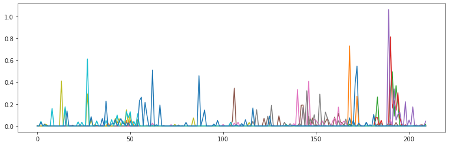
Eval¶
%%time
val, loss = tr.validate(use_ema=False)
val_ema, loss_ema = tr.validate(use_ema=True)
CPU times: user 25.4 s, sys: 10.7 s, total: 36.1 s
Wall time: 1min 8s
loss_summary = {
k: {
'vae': np.round(v.mean(), 2),
'ema': np.round(loss_ema[k].mean(), 2),
} for k, v in loss.items()
}
print(f"{vae.cfg.name()}\n{tr.cfg.name()}\n\n{loss_summary}\n")
k-32_z-7x[10,20]_enc(2x2)-dec(2x1)-pre(1x3)-post(1x3) ep2000-b500-lr(0.002)_beta(0.25:1x0.3)_lamb(0.001)_gr(1000) {'epe': {'vae': 3.54, 'ema': 3.54}, 'kl': {'vae': 31.21, 'ema': 31.17}}
for k, v in val.items():
if 'fig' in k:
print(f"{k} (VAE)")
display(v)
print(f"{k} (EMA)")
display(val_ema[k])
print('-' * 70)
fig/sample (VAE)
fig/sample (EMA)
----------------------------------------------------------------------
fig/regression (VAE)
fig/regression (EMA)
----------------------------------------------------------------------
fig/mutual_info (VAE)
fig/mutual_info (EMA)
----------------------------------------------------------------------
len(tr.stats['grad'])
77
np.quantile(tr.stats['grad'], [0.5, 0.7, 0.9, 1])
array([2.08101733e+03, 1.10896814e+04, 2.04761288e+07, 7.40017701e+11])
np.quantile(tr.stats['loss'], [0.5, 0.7, 0.9, 1])
array([1.08627501e+01, 1.16923437e+01, 2.90405513e+03, 1.09240038e+09])
gamma = np.stack(tr.stats['gamma'])
gamma.shape
(160000, 30)
fig, axes = create_figure(3, 1, (15, 11))
axes[0].plot(gamma[:50000, 0])
axes[1].plot(gamma[:50000, 1:])
axes[2].plot(gamma[:50000]);
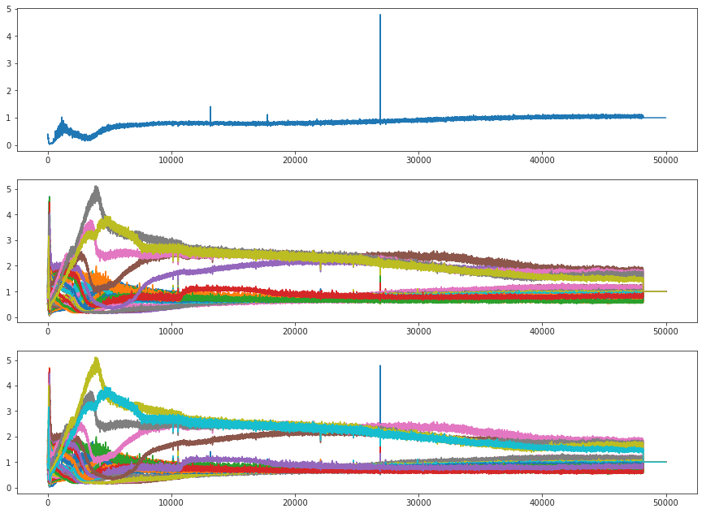
vae.expand
ModuleList(
(0-9): 10 x DeConv2D(7, 7, kernel_size=(4, 4), stride=(1, 1))
(10-29): 20 x DeConv2D(7, 7, kernel_size=(8, 8), stride=(1, 1))
)
Eval fit (old code)¶
all_norm = [torch.exp(n.ravel()) for n in vae.all_log_norm]
all_norm = to_np(torch.cat(all_norm))
sns.histplot(all_norm, bins=np.linspace(0.5, 1.5, 101));
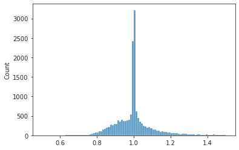
np.max(all_norm), 100 * (all_norm < 0.5).sum() / len(all_norm), 100 * (all_norm > 1.5).sum() / len(all_norm)
(5.4563937, 0.0, 1.7846191585919293)
_ = plot_latents_hist(
z=val['z_sample'],
scales=vae.latent_scales()[0],
)
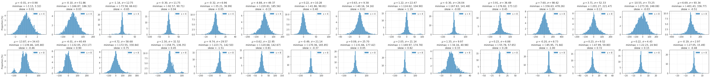
%%time
_ = plot_latents_hist_full(
z=val['z_sample'],
scales=vae.latent_scales()[0],
constrained_layout=False,
tight_layout=True,
)
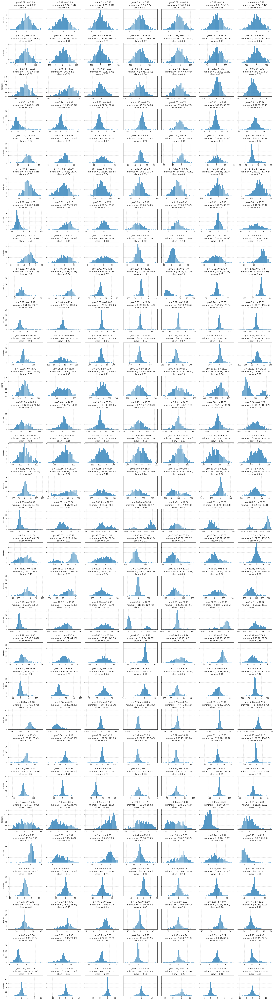
CPU times: user 40.1 s, sys: 1.31 s, total: 41.4 s
Wall time: 41.4 s
from vae.vae2d import *
norms = collections.defaultdict(list)
# norms['stem'] = list(to_np(vae.stem.lognorm.exp()))
for cell in vae.enc_tower:
for m in cell.modules():
if hasattr(m, 'lognorm'):
norms[f"{type(cell).__name__}_enc"].extend(
list(to_np(m.lognorm.exp())))
for cell in vae.dec_tower:
for m in cell.modules():
if hasattr(m, 'lognorm'):
norms[f"{type(cell).__name__}_dec"].extend(
list(to_np(m.lognorm.exp())))
for cell in vae.enc_sampler:
for m in cell.modules():
if hasattr(m, 'lognorm'):
norms['enc_sampler'].extend(
list(to_np(m.lognorm.exp())))
for cell in vae.dec_sampler:
for m in cell.modules():
if hasattr(m, 'lognorm'):
norms['dec_sampler'].extend(
list(to_np(m.lognorm.exp())))
for cell in vae.expand:
for m in cell.modules():
if hasattr(m, 'lognorm'):
norms['expand'].extend(
list(to_np(m.lognorm.exp())))
for cell in vae.pre_process:
for m in cell.modules():
if hasattr(m, 'lognorm'):
norms[f"{type(cell).__name__}_pre"].extend(
list(to_np(m.lognorm.exp())))
for cell in vae.post_process:
for m in cell.modules():
if hasattr(m, 'lognorm'):
norms[f"{type(cell).__name__}_post"].extend(
list(to_np(m.lognorm.exp())))
norms = dict(sorted(norms.items()))
fig, axes = create_figure(2, 4, (13, 4), constrained_layout=True)
for i, (k, v) in enumerate(norms.items()):
ax = axes.flat[i]
ax.axvline(1, color='k', ls='--', lw=1.0, zorder=0)
sns.histplot(v, color=f"C{i}", bins=np.linspace(0, 5, 101), label=f"{k} ({np.mean(v): 0.1f})", ax=ax)
title = f"max: {np.max(v):0.1f}\n{100 * (np.array(v) > 5).sum() / len(v):0.1f} % are > 5"
ax.set_title(title, fontsize=10)
ax.set_ylabel('')
ax.legend()
plt.show()
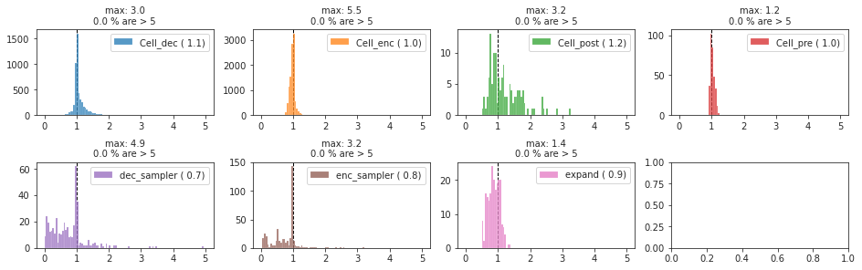
x, norm = next(iter(tr.dl_tst))
y, z, q, p = tr.model(x)
for dist in p:
fig, axes = create_figure(1, 2, (9, 3))
sns.histplot(to_np(dist.mu.squeeze().ravel()), ax=axes[0])
sns.histplot(to_np(dist.sigma.squeeze().ravel()), ax=axes[1])
plt.show()
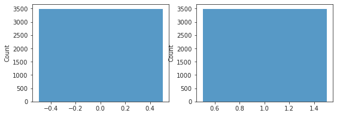
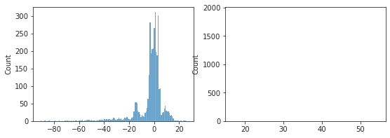
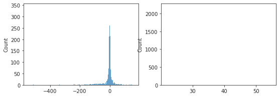
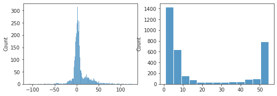
 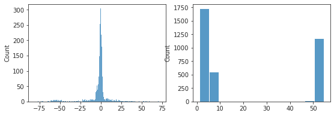
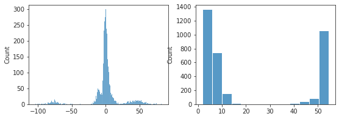
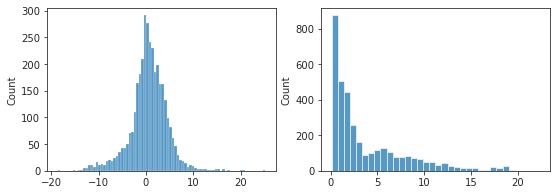
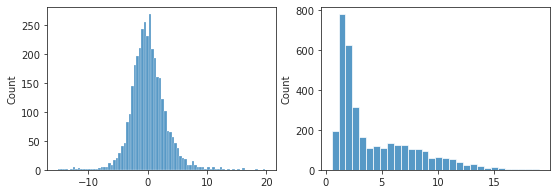
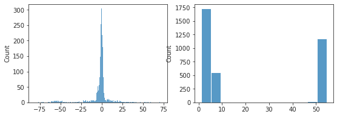
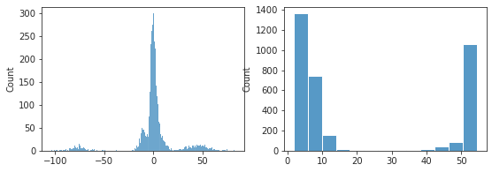
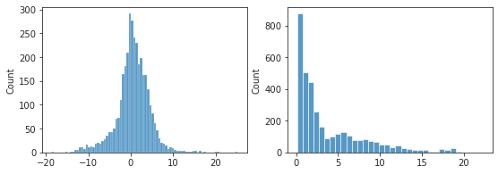
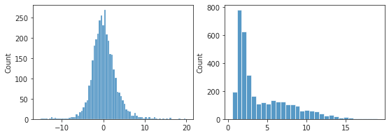
 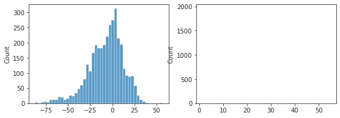
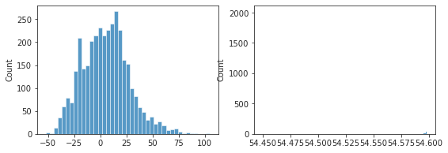
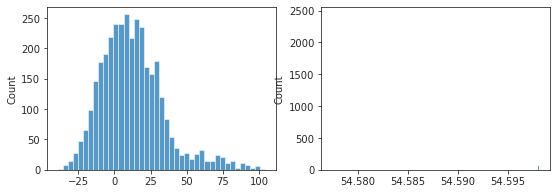
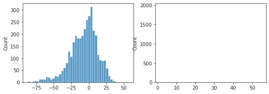
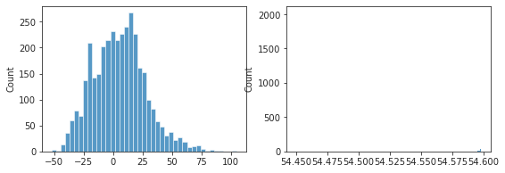
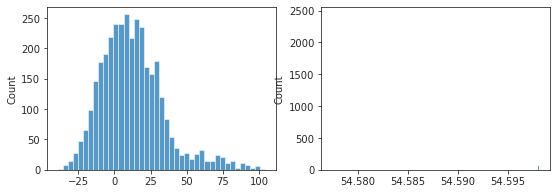
 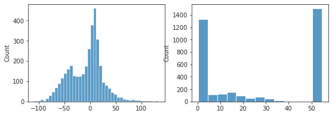
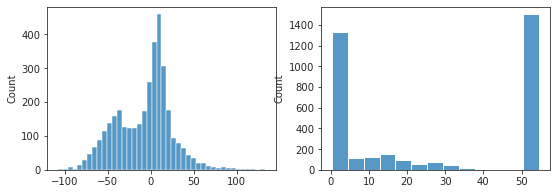

 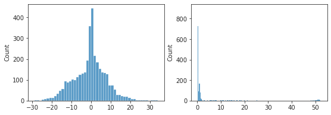
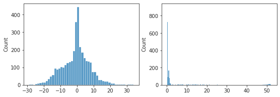
 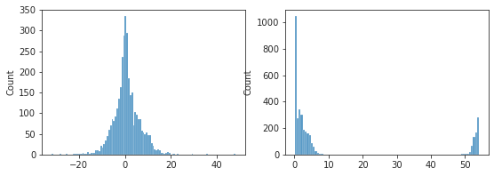
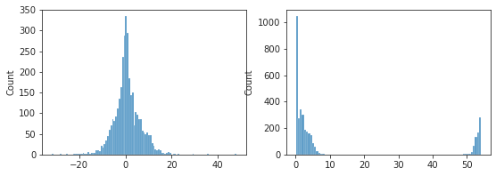
 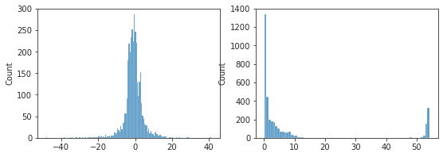
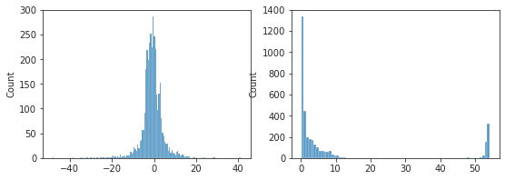
 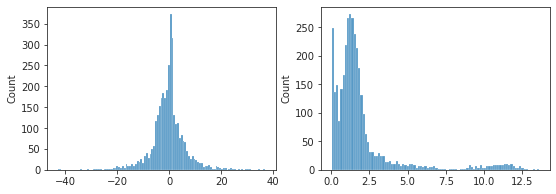
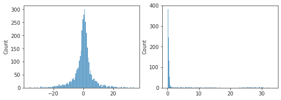
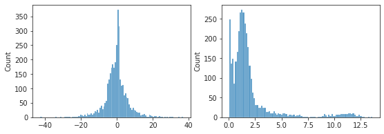
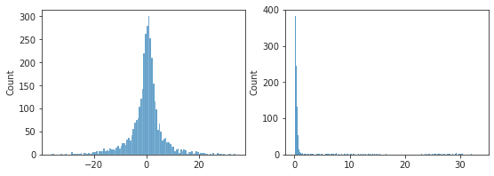

 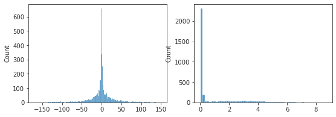
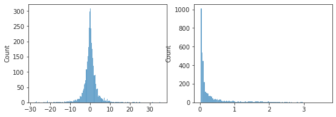
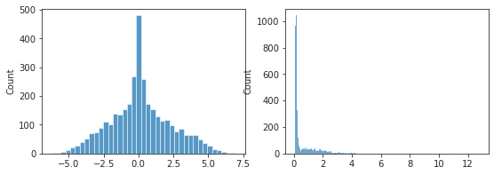
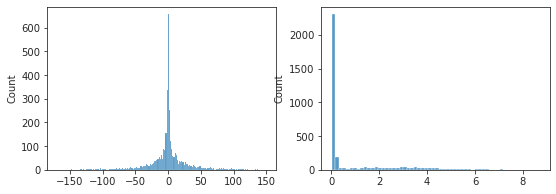
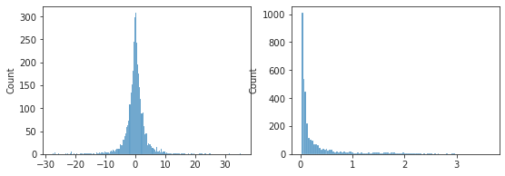
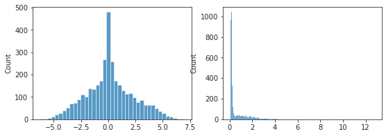
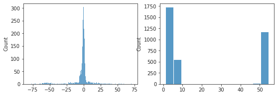
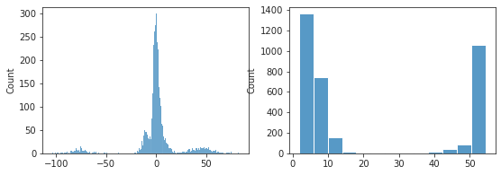
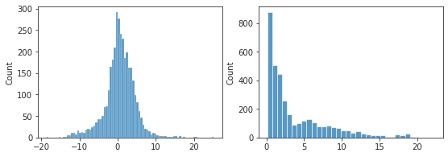
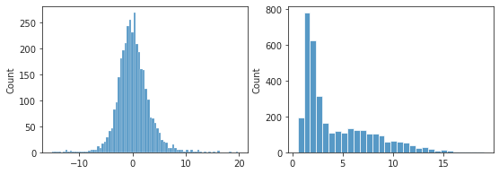
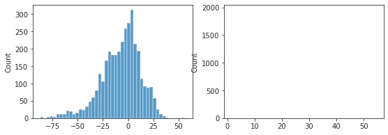
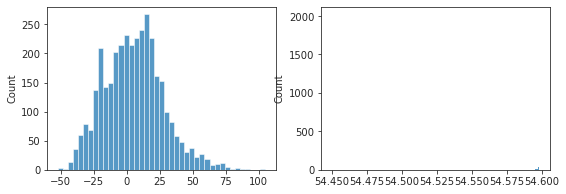
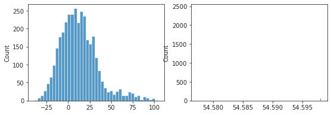
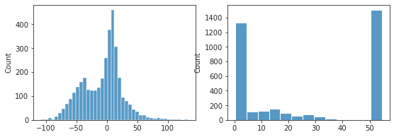
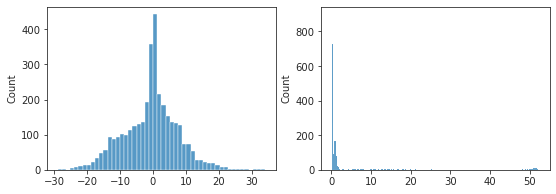
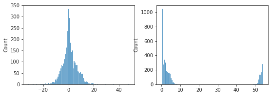
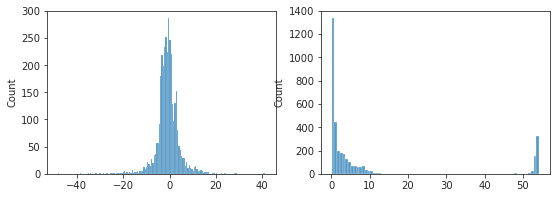
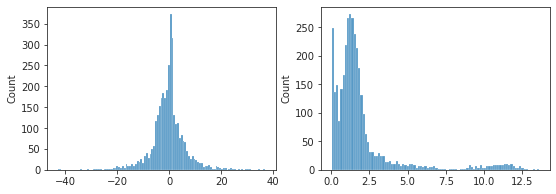
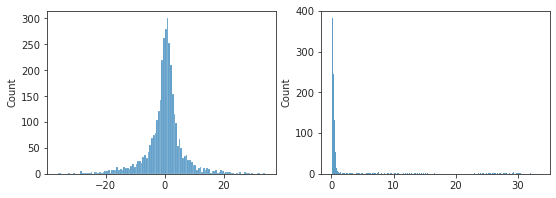
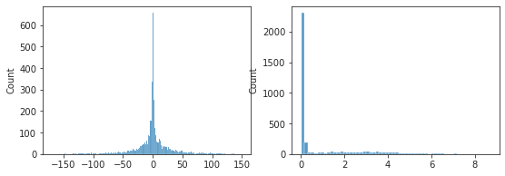
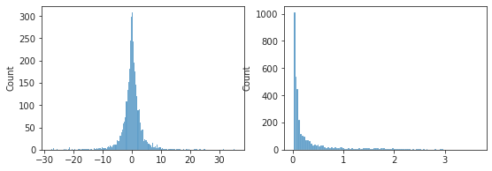
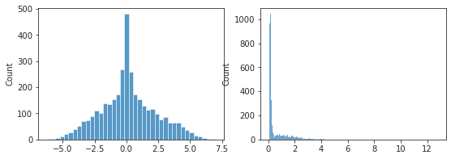
Gradient quantiles¶
a = np.stack(tr.stats['q'])
a.shape
(3028, 4)
fig, axes = create_figure(4, 1, (15, 8), 'all')
for i, ax in enumerate(axes.flat):
ax.plot(a[:, i])
ax.set_yscale('log')

fig, axes = create_figure(4, 1, (15, 8), 'all', 'all')
for i, ax in enumerate(axes.flat):
ax.plot(a[:, i])
# ax.set_yscale('log')

ids = np.argsort(a[:, 3])[::-1]
a[ids][:10]
array([[4.70497303e+01, 6.24381454e+02, 3.25176420e+03, 1.18062537e+04],
[6.09734440e+00, 1.76353558e+02, 1.29898698e+03, 4.81890981e+03],
[4.28144193e+00, 4.32554083e+01, 2.24989483e+02, 8.07263673e+02],
[2.16084993e+00, 1.57247159e+01, 9.92054600e+01, 4.63432818e+02],
[1.19143877e-01, 3.40490681e+00, 3.50532925e+01, 2.12924517e+02],
[3.73780169e-02, 1.79290777e+00, 2.68807427e+01, 1.75726674e+02],
[7.94552900e-02, 8.66108224e-01, 7.59450638e+00, 4.32092611e+01],
[2.84448471e-02, 5.04085064e-01, 5.93678675e+00, 3.94013906e+01],
[3.92370038e-02, 2.42084436e-01, 1.97695330e+00, 1.15657066e+01],
[4.41845823e-02, 4.34113048e-01, 2.57850293e+00, 1.09694010e+01]])